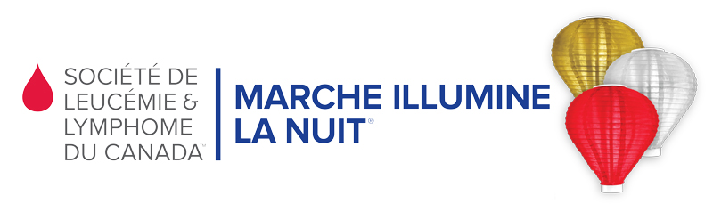

To gain work experience
Assembled my own computer from scratch
JOHN ABBOTT COLLEGE DORVAL-JEAN-XXIII
Montreal, QC, Canada Montreal, QC, Canada
DEC in Computer Science SEC. V
Expected 2021 2018
Programming Languages C#
Web Design HTML, CSS
Software Application MS Visual Studio, MS Office
MARCHE MONDE Volunteer
Organized, desighed and built an animations tool
2017-2018
SUSTAINABLE DEVELOPMENT COMMITEE
Responsible for the reduction of waste
2016-2017
CLUB DES PETITS DEJEUNERS
Provided breakfast to the kids in need at the elementary school Harfang-des-neiges
2015
L'AIDE ORPHELIN DE L'AFRIQUE Volunteer
Participated in a fundraiser
2014
FLAG CAMILLE-LEFEBVRE
Provided entertainment to the resident
2012-2014
ILLUMINE LA NUIT
Help set up the activities for the event
2012

MONTREAL ART CENTER
Organized the supplies
2012
Programming Project:
English, fluent Mandarin, learning
French, fluent Khmer, usable
Teochew, mother tongue
2018, High School, Diplôme d’Éducation Secondaire Internationale
Badminton, piano & drawing